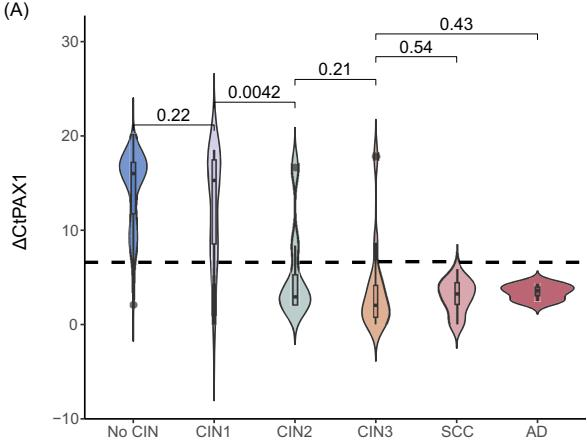

1Postmenopausal Screening Challenge
TZ3
transformation zone migration
↑9.91%
delayed treatment
CC ↑
cases >50 y in China
- Atrophy: hormonal downregulation → SCJ migrates into canal (TZ3) → cytology/colposcopy sensitivity falls.
- Missed disease: non-16/18 hrHPV & HPV(−) adenocarcinomas often escape HPV/cytology screens.
- Gap: methylation measures host transforming infection — independent of HPV type & cytology reading.
2Study Design — Two Cohorts
216
≥50 y (colposcopy)
212
<50 y matched 1:1
44
CIN2+ in ≥50 y
- Enrollment: Jun 2023–Jan 2025, First Hospital of Hunan Univ. TCM; colposcopy referrals for positive screening/symptoms.
- Reference: colposcopy-directed biopsy + ECC (TZ3); dual pathologist consensus; endpoint = pathology grade.
- Assay: CISCER® (PAX1m/JAM3m, ΔCt cutoffs PAX1 ≤6.6 · JAM3 ≤10.0); compared with LBC≥ASC-US, hrHPV+, HPV16/18+.
- Cohort mix: ≥50 y — NILM 46.8% · hrHPV+ 82.9% (16/18 26.4% · non-16/18 56.5%) · cancer 9.7% (SCC 8.3% · AD 1.4%).
82.9%
hrHPV+ in ≥50 y
46.8%
NILM cytology
9.7%
cancer (≥50 y)
- Matched control: <50 y women matched 1:1 by hrHPV & cytology — isolates age-specific performance.
- Younger comparison: CIN2+ 11.8%/CIN3+ 10.4% in <50 y vs 3.7%/6.9% in ≥50 y — more invasive disease at older age.
≥50 y
primary analysis
ΔCt
PAX1/JAM3 readout
TZ3
ECC added
Pathology: no CIN 147 (68.1%) · CIN1 25 · CIN2 8 · CIN3 15 · SCC 18 · AD 3. Assay reproducibility: ΔCt measured on SLAN-96S real-time PCR with GAPDH internal control.
95.1%
假阳性总削减
90.9%
假阴性总削减
5+2
NILM/HPV(−) 补漏
关键：绝经后细胞学与阴道镜灵敏度受限，甲基化作为分子补充手段可显著改善 ≥50 岁人群的检出与分流。
3Head-to-Head Performance (CIN2+, ≥50 y)
| Test | Se % | Sp % | PPV % | NPV % | AUC |
|---|---|---|---|---|---|
| CISCER® | 93.2 | 93.6 | 78.8 | 98.2 | 0.934 |
| PAX1m | 90.9 | 94.8 | 81.6 | 97.6 | 0.928 |
| JAM3m | 81.8 | 97.1 | 87.8 | 95.4 | 0.895 |
| LBC (≥ASC-US) | 75.0 | 52.3 | 28.7 | 89.1 | 0.637 |
| hrHPV+ | 95.5 | 20.3 | 23.5 | 94.6 | 0.579 |
| HPV16/18+ | 61.4 | 82.6 | 47.4 | 89.3 | 0.720 |
| LBC+hrHPV | 81.8 | 45.3 | 27.7 | 90.7 | 0.636 |
CIN3+ : CISCER Se 97.2% · Sp 90.6% · AUC 0.939 (vs LBC Se 75.0%/Sp 51.1%). Methylation significantly more specific than LBC (p=1.9e-17) and LBC+hrHPV (p=8.0e-22).
4Methylation Tracks Lesion Severity

- Gradient: ΔCt falls as lesion severity rises (no CIN ≈ CIN1 > CIN2+ → cancer).
- HPV-type independent: no PAX1/JAM3 difference between 16/18 vs non-16/18 (C,D) — methylation marks disease, not HPV.
- Older vs younger: ≥50 y show higher methylation (lower ΔCt) in CIN2+ than <50 y — supports age-specific utility.
5Triage Value — Cutting False Referrals
>90%
false positives reduced
95.1%
FP cut in cytology path
2 AD
hrHPV(−)/cytology(−) caught
- HPV16/18+ triage: CISCER cleared 28/30 false positives vs cytology 18/30 (p=0.006), with fewer misses (1/27 vs 3/27).
- Non-16/18 hrHPV: 102/107 false positives removed vs cytology 49/107 (p=6.2e-15).
- Catch-up: 7 non-16/18 + NILM high-grade cases (2 SCC · 2 CIN3 · 1 CIN2) and 2 hrHPV-negative adenocarcinomas were methylation-positive.